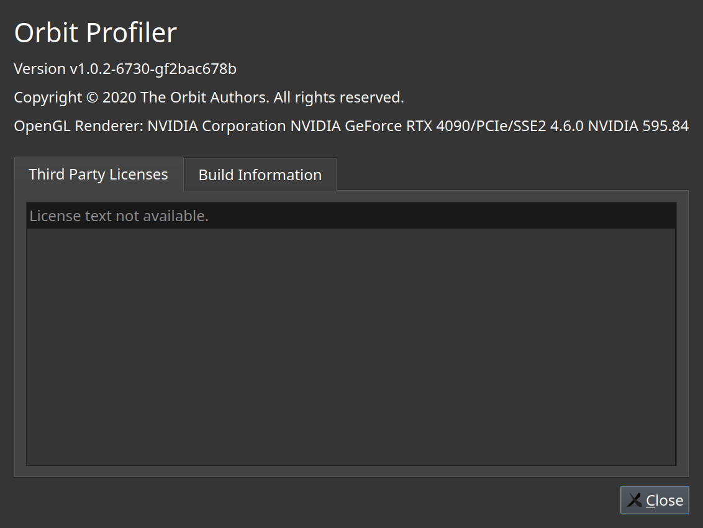

About
Which build of Orbit produced this manual.
The About dialog carries the version and the build report. Quoting it is the fastest way to make a bug report reproducible.

Which build of Orbit produced this manual.
The About dialog carries the version and the build report. Quoting it is the fastest way to make a bug report reproducible.
